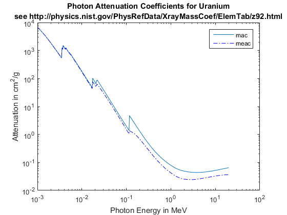
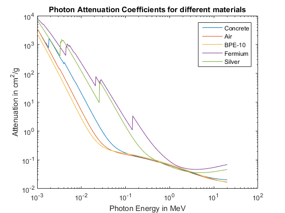
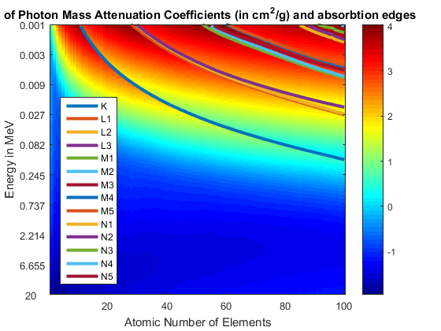
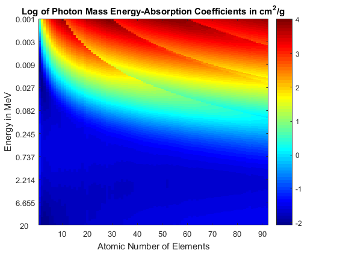
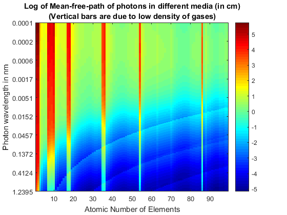
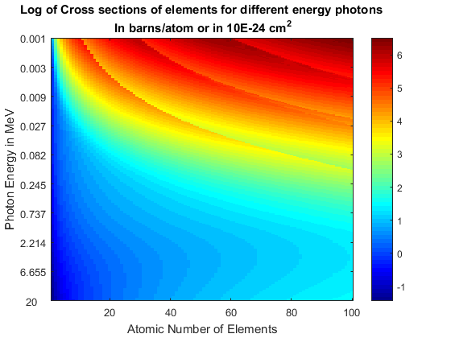
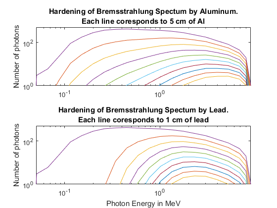

Tutorial for PhotonAttenuation Package
By Jarek Tuszynski (jaroslaw.w.tuszynski@leidos.com)
Package PhotonAttenuation provides set of functions for modeling of photons (x-ray, gamma-ray, etc.), passing through different materials. The tools are based on attenuation and energy absorption coefficients of photons in various materials. The tables of absorption coefficients were copied from NIST[1][2] and embedded in the MATLAB code.
Package consist of 4 functions:
- PhotonAttenuation - the main function returning variuos physical quantaties for photons of various energies passing through different materials of different thickness
- PhotonAttenuationQ - the helper function providing bare-bones access to NIST tables hardwired into the code. Simpler version of PhotonAttenuation function with much fewer input and output options. Allow access to absorbtion edge tables.
- ParseChemicalFormula - converts many different styles of names used for elements, compounds and mixtures to uniform list of elements and their weight ratios.
- PhysProps - provides physical properties (like ratio of atomic number to mass or density), needed by PhotonAttenuation function, for all elements and some selected compounds.
Contents
- Input and output parameters of PhotonAttenuation function
- References
- History
- Licence
- Plot Photon Attenuation Coefficients for Uranium
- Plot Photon Attenuation Coefficients, using different input styles
- Plot Photon Mass Attenuation Coefficients and absorbtion edges
- Plot Log of Mass Energy-Absorption Coefficients
- Plot mean free path of photons in different media
- Plot Cross sections of elements for different energy photons
- Hardening of Bremsstrahlung Spectum
- Dual x-ray ability to recognize different materials, using Mono-energetic energies and Flat Spectra.
- Get properties of concrete
- Get absorbtion Edge information for Lead
- Access Element Properties through PhysProps
- Access List of Compound names recognized by PhysProps, PhotonAttenuation and ParseChemicalFormula functions
- Test ParseChemicalFormula
- Test consistency between stored and calculated Z/A values
Input and output parameters of PhotonAttenuation function
Format: X = PhotonAttenuation(Material, Energy, Options, Thickness)
Input :
1) Material - string, number or array of strings, numbers or cells
describing material type.
- Element atomic number Z - in 1 to 100 range
- Element symbols - 'Pb', 'Fe'
- Element names - 'Lead', 'Iron', 'Cesium' or 'Caesium'
- Some common names and full compound names - 'Water', 'Polyethylene'
(see function PhysProps for more details)
- Compound formulas - 'H2SO4', 'C3H7NO2'- those are case sensitive
- Mixtures of any of above with fractions by weight - like
'H(0.057444)C(0.774589)O(0.167968)' for Bakelite or
'B(10)H(11)C(58)O(21)' for Borated Polyethylene (BPE-10)
Note: For 'Options' other than 'mac' or 'meac', 'Material' has to be
recognized by 'PhysProps' function since densities are needed for
calculation.
2) Energy - Energy of the photons. Can be single energy or vector of
energies. Several formats are allowed:
- Energy in MeV, should be in [0.001, 20] MeV range.
- Wavelengths in nano-meters. Encoded as negative numbers. The valid
range is 6.1982e-5 to 1.2396 nm;
- Continuous Spectrum - Encoded in 2 columns: column one contains
energy in MeV and column two contains relative number of photons at that
energy. Spectrum is assumed to be continuous and output is
calculated through integration using 'trapz' function.
3) Options - specifies what to return. String or number:
1 - 'mac' - function returns Mass Attenuation Coefficients in cm^2/g
2 - 'meac' - function returns Mass Energy-Absorption Coefficients
in cm^2/g. See link below for more info:
http://physics.nist.gov/PhysRefData/XrayMassCoef/chap3.html
3 - 'cross section' or 'x' - function returns cross section in barns per
atom (convert to cm^2 per atom by multiplying by 10^-24).
Available only for elements.
4 - 'mean free path' or 'mfp' - function returns mean free path (in cm) of
photon in the given material . Available only for chemicals
recognized by 'PhysProps' function (since density is needed).
5 - 'transmission' or 't' - fraction of protons absorbed by given thickness
of material
6 - 'ln_T' - log of transmission
7 - 'lac' - Linear Attenuation Coefficients in 1/cm same as 1/(Cross
Section) or mac*density.
8 - 'half value layer' or 'hvl' - function returns half-value layer (in cm) of
photon in the given material.
9 - 'tenth value layer' or 'tvl' - analogous to 'hvl' .
4) Thickness - Thickness of material in cm. Either scalar or vector of
the same length as number of materials. Negative numbers indicate
mass thickness measured in g/cm^2 (density*thickness). Needed only
if energy spectrum is used or in case of Options set to
'Transmission'.
Output :
X - output depends on 'Options' parameter. Columns always correspond
to the materials and rows correspond to energy. In case of spectrum
input only single row is returned.References
[1] Tables are based on "X-Ray Attenuation and Absorption for Materials of Dosimetric Interest" (XAAMDI) database (NIST 5632 report): J. Hubbell and S.M. Seltzer, "Tables of X-Ray Mass Attenuation Coefficients and Mass Energy-Absorption Coefficients 1 keV to 20 MeV for Elements Z = 1 to 92 and 48 Additional Substances of Dosimetric Interest, "National Institute of Standards and Technology report NISTIR 5632 (1995). http://physics.nist.gov/PhysRefData/XrayMassCoef/cover.html
[2] MAC values for elements 93 to 100 (Neptunium to Fermium) came from XCOM: Photon Cross Sections Database (NBSIR 87-3597): Those tables give photon's "total attenuation coefficients" for elements with atomic number (Z) smaller than 100. Photon energy range is from 0.001 MeV to 100 GeV. http://physics.nist.gov/PhysRefData/Xcom/Text/XCOM.html
[3] Element properties: http://physics.nist.gov/PhysRefData/XrayMassCoef/tab1.html
[4] Material properties: http://physics.nist.gov/cgi-bin/Star/compos.pl
History
- Original code was written in 2006 by Jarek Tuszynski (SAIC) and published as package "PhotonAttenuation" (http://www.mathworks.com/matlabcentral/fileexchange/11442-photonattenuation)
- Code was inspired by John Schweppe Mathematica code avaiable at http://library.wolfram.com/infocenter/MathSource/4267/
- Aug 2006 - new version of the code was published as "PhotonAttenuation2"
- Sep 2011 - minor corrections and changes to the tutorial script
- July 2013 - minor corrections and changes to the tutorial script
- Aug 2014 - minor correction to error handling
Licence
The package is distributed under BSD License
close all clear variables format compact; % viewing preference clear variables; type('license.txt') colormap(jet);
Copyright (c) 2007, Jaroslaw Tuszynski
All rights reserved.
Redistribution and use in source and binary forms, with or without
modification, are permitted provided that the following conditions are
met:
* Redistributions of source code must retain the above copyright
notice, this list of conditions and the following disclaimer.
* Redistributions in binary form must reproduce the above copyright
notice, this list of conditions and the following disclaimer in
the documentation and/or other materials provided with the distribution
THIS SOFTWARE IS PROVIDED BY THE COPYRIGHT HOLDERS AND CONTRIBUTORS "AS IS"
AND ANY EXPRESS OR IMPLIED WARRANTIES, INCLUDING, BUT NOT LIMITED TO, THE
IMPLIED WARRANTIES OF MERCHANTABILITY AND FITNESS FOR A PARTICULAR PURPOSE
ARE DISCLAIMED. IN NO EVENT SHALL THE COPYRIGHT OWNER OR CONTRIBUTORS BE
LIABLE FOR ANY DIRECT, INDIRECT, INCIDENTAL, SPECIAL, EXEMPLARY, OR
CONSEQUENTIAL DAMAGES (INCLUDING, BUT NOT LIMITED TO, PROCUREMENT OF
SUBSTITUTE GOODS OR SERVICES; LOSS OF USE, DATA, OR PROFITS; OR BUSINESS
INTERRUPTION) HOWEVER CAUSED AND ON ANY THEORY OF LIABILITY, WHETHER IN
CONTRACT, STRICT LIABILITY, OR TORT (INCLUDING NEGLIGENCE OR OTHERWISE)
ARISING IN ANY WAY OUT OF THE USE OF THIS SOFTWARE, EVEN IF ADVISED OF THE
POSSIBILITY OF SUCH DAMAGE.
Plot Photon Attenuation Coefficients for Uranium
Input and output parameters are very simple so PhotonAttenuationQ function can be used Compare with http://physics.nist.gov/PhysRefData/XrayMassCoef/ElemTab/z92.html
figure(1); clf; E = logspace(log10(0.001), log10(20), 500); % define energy grid mac = PhotonAttenuationQ(92, E, 'mac'); meac = PhotonAttenuationQ(92, E, 'meac'); loglog(E, mac); hold on; loglog(E, meac, 'b-.'); legend({'mac', 'meac'}); ylabel('Attenuation in cm^2/g'); xlabel('Photon Energy in MeV'); title({'Photon Attenuation Coefficients for Uranium',... 'see http://physics.nist.gov/PhysRefData/XrayMassCoef/ElemTab/z92.html'});
Plot Photon Attenuation Coefficients, using different input styles
Input and output parameters are more varied which can be handled by PhotonAttenuation function
figure(1); clf; E = logspace(log10(0.001), log10(20), 500); % define energy grid Z = {'Concrete', 'Air', 'B(10)H(11)C(58)O(21)', 100, 'Ag'}; mac = PhotonAttenuation(Z, E, 'mac'); loglog(E, mac); legend({'Concrete', 'Air', 'BPE-10', 'Fermium', 'Silver'}); ylabel('Attenuation in cm^2/g'); xlabel('Photon Energy in MeV'); title('Photon Attenuation Coefficients for different materials');
Plot Photon Mass Attenuation Coefficients and absorbtion edges
Plot as a function of energy and atomic number of elements See http://physics.nist.gov/PhysRefData/XrayMassCoef/chap2.html for details
figure(1); clf; Z = 1:100; % elements with Z in 1-100 range E = logspace(log10(0.001), log10(20), 500); % define energy grid [mac, CEdge] = PhotonAttenuationQ(Z, E); imagesc(log10(mac)); colorbar; title('Log of Photon Mass Attenuation Coefficients (in cm^2/g) and absorbtion edges'); xlabel('Atomic Number of Elements'); ylabel('Energy in MeV'); zlabel('Attenuation in cm^2/g'); set(gca,'YTick',linspace(1, length(E), 10)); set(gca,'YTickLabel',1e-3*round(1e3*logspace(log10(0.001), log10(20), 10))) hold on ed = accumarray([CEdge(:,1),CEdge(:,2)],CEdge(:,3)); % get per element energies of 14 absorbtion edges ed = 500*(log(ed')-log(0.001))/(log(20)-log(0.001)); % convert energy to row numbers of the image plot(ed ,'LineWidth',3); % plot absorbtion edges L = {'K','L1','L2','L3','M1','M2','M3','M4','M5','N1','N2','N3','N4','N5'}; legend(L, 'Location', 'southwest'); % add legend hold off;
Plot Log of Mass Energy-Absorption Coefficients
Plot as a function of energy and atomic number of elements See http://physics.nist.gov/PhysRefData/XrayMassCoef/chap3.html for details
figure(1); clf; Z = 1:92; % elements with Z in 1-92 range (Elements higher than 92 are not defined) E = logspace(log10(0.001), log10(20), 500); % define energy grid meac = PhotonAttenuationQ(Z, E, 'meac'); imagesc(log10(meac)); colorbar; title('Log of Photon Mass Energy-Absorption Coefficients in cm^2/g'); xlabel('Atomic Number of Elements'); ylabel('Energy in MeV'); set(gca,'YTick',linspace(1, length(E), 10)); set(gca,'YTickLabel',1e-3*round(1e3*logspace(log10(0.001), log10(20), 10)))
Plot mean free path of photons in different media
Plot as function of energy and atomic number of media/element
figure(1); clf; Z = 1:99; % elements with Z in 1-99 range (Fermium Z=100 was dropped since its density is not known) E = -logspace(log10(6.198e-5), log10(1.2395), 500); % wavelength instead of energy X = PhotonAttenuation(Z, E, 'mean free path'); imagesc(log10(X)); colorbar; title({'Log of Mean-free-path of photons in different media (in cm)', ... '(Vertical bars are due to low density of gases)'}); xlabel('Atomic Number of Elements'); ylabel('Photon wavelength in nm'); set(gca,'YTick',linspace(1, length(E), 10)); set(gca,'YTickLabel',1e-4*round(1e4*logspace(log10(6.198e-5), log10(1.2395), 10)))
Plot Cross sections of elements for different energy photons
figure(1); clf; Z = 1:100; % elements with Z in 1-100 range E = logspace(log10(0.001), log10(20), 500); % define energy grid X = PhotonAttenuation(Z, E, 'cross section'); imagesc(log10(X)); colorbar; title({'Log of Cross sections of elements for different energy photons',... ' In barns/atom or in 10E-24 cm^2'}); xlabel('Atomic Number of Elements'); ylabel('Photon Energy in MeV'); set(gca,'YTick',linspace(1, length(E), 10)); set(gca,'YTickLabel',1e-3*round(1e3*logspace(log10(0.001), log10(20), 10)))
Hardening of Bremsstrahlung Spectum
Spectra change differently as they pass through different materials
figure(1); clf; %Define 9 MeV Bremsstrahlung Spectrum E=[0.05,0.0506,0.0664,0.0873,0.1147,0.1506,0.1979,0.2599,0.3414,0.4485,... 0.5891,0.7738,1.0165,1.3352,1.7539,2.3038,3.0262,3.9751,5.2215,6.8587,8,9]'; S=[1,3,6,23,90,175,280,365,400,415,392,374,358,326,281,223,175,119,81,44,20,1]'; T_Al = PhotonAttenuation('Aluminum', E, 'transmission', 5); T_Pb = PhotonAttenuation('Lead' , E, 'transmission', 1); S_Al = repmat(S,1,25); S_Pb = repmat(S,1,25); for i=2:10 S_Al(:,i) = S_Al(:,i-1).*T_Al; S_Pb(:,i) = S_Pb(:,i-1).*T_Pb; end subplot(2,1,1) loglog(E,S_Al); xlim([0.05, 9]); ylim([1, 500]); ylabel('Number of photons'); title({'Hardening of Bremsstrahlung Spectum by Aluminum.' 'Each line coresponds to 5 cm of Al'}) subplot(2,1,2) loglog(E,S_Pb); xlim([0.05, 9]); ylim([1, 500]); xlabel('Photon Energy in MeV'); ylabel('Number of photons'); title({'Hardening of Bremsstrahlung Spectum by Lead.' 'Each line coresponds to 1 cm of lead'})
Dual x-ray ability to recognize different materials, using Mono-energetic energies and Flat Spectra.
Notice that ratio of logs of transmitions for 10 MeV and 5 MeV photons is depent on thickness of the material in case of flat spectras, but is independent of thickness in case of mono-energetic energies
E0 = 0.5; EH = exp(log(E0):0.005:log(10)); % define spectrum range EL = exp(log(E0):0.005:log(5)); EH = [EH; ones(1,length(EH))]; % define flat spectrum EL = [EL; ones(1,length(EL))]; T = logspace(0,log10(400),50); % mass thickness in g/cm^2 Z = 1:99; % elements with Z in 1-99 range TL1 = zeros(length(T),length(Z)); TH1 = TL1; TL2 = TL1; TH2 = TL1; for i = 1:length(T) TL1(i,:) = -log(PhotonAttenuation(Z, 5, 'Transmission', -T(i))); TH1(i,:) = -log(PhotonAttenuation(Z, 10, 'Transmission', -T(i))); TL2(i,:) = -log(PhotonAttenuation(Z, EL, 'Transmission', -T(i))); TH2(i,:) = -log(PhotonAttenuation(Z, EH, 'Transmission', -T(i))); end ratio1 = TH1./TL1; ratio2 = TH2./TL2; [~, i]=min(ratio1(:)); ratio2( 1 )=ratio1(i); % make sure ranges ... [~, i]=max(ratio1(:)); ratio2(end)=ratio1(i); % .. are the same figure('Position',[1 1 800 600]) colormap(jet); subplot(1,2,2); imagesc(ratio1'); colorbar; title('Mono-energetic 5 & 10 MeV sources.'); ylabel('Atomic Number Z'); xlabel('Mass Thickness in g/cm^2'); t = 1:8:50; set(gca,'XTick',t); lab = cell (1,length(t)); for i = 1:length(t), lab{i} = num2str(round(T(t(i)))); end set(gca,'XTickLabel',lab); subplot(1,2,1); imagesc(ratio2'); %colorbar; title('Flat spectra Min=0.5, Max=5 & 10 MeV.'); xlabel('Mass Thickness in g/cm^2'); set(gca,'XTick',t); set(gca,'XTickLabel',lab);

Get properties of concrete
Show how to use PhysProps, ParseChemicalFormula & PhotonAttenuation functions for accesing various physical properties of materials
X = PhysProps('Concrete'); Concrete.Density = X{2}; % material density Concrete.Composition = X{3}; % element composition Concrete.Z_A = X{1}; % mean atomic number to atomic mass ratio [Z, R] = ParseChemicalFormula(X{3}); MFP = PhotonAttenuation(X{3}, 0.662, 'mean free path'); Concrete.ElementZ = Z'; % atomic numbers of elements Concrete.ElementRatio = R'; % weight ratio of elements Concrete.MeanFreePath = MFP; % Mean Free Path of gammas from Cs-137 source disp(Concrete) % display the data
Density: 2.3000
Composition: 'H(0.0221)C(0.002484)O(0.57493)Na(0.015208)Mg(0.001266)A...'
Z_A: 0.5093
ElementZ: [1 6 8 11 12 13 14 19 20 26]
ElementRatio: [1x10 double]
MeanFreePath: 5.5160
Get absorbtion Edge information for Lead
[~, AbsEdge] = PhotonAttenuationQ(82);
L = {'K','L1','L2','L3','M1','M2','M3','M4','M5','N1','N2','N3','N4','N5'};
for i=1:size(AbsEdge,1)
fprintf('Edge %s: location: %6.3f keV, Mass Attenuation Coefficients: [%5.1f %5.1f] cm^2/g\n',...
L{AbsEdge(i,1)}, AbsEdge(i,3)*1000, AbsEdge(i,4),AbsEdge(i,5));
end
Edge K: location: 88.004 keV, Mass Attenuation Coefficients: [ 1.9 7.7] cm^2/g Edge L1: location: 15.861 keV, Mass Attenuation Coefficients: [134.4 154.8] cm^2/g Edge L2: location: 15.200 keV, Mass Attenuation Coefficients: [107.8 148.5] cm^2/g Edge L3: location: 13.035 keV, Mass Attenuation Coefficients: [ 67.0 162.1] cm^2/g Edge M1: location: 3.851 keV, Mass Attenuation Coefficients: [1311.0 1368.0] cm^2/g Edge M2: location: 3.554 keV, Mass Attenuation Coefficients: [1496.0 1585.0] cm^2/g Edge M3: location: 3.066 keV, Mass Attenuation Coefficients: [1857.0 2146.0] cm^2/g Edge M4: location: 2.586 keV, Mass Attenuation Coefficients: [1944.0 2458.0] cm^2/g Edge M5: location: 2.484 keV, Mass Attenuation Coefficients: [800.6 1397.0] cm^2/g
Access Element Properties through PhysProps
P = PhysProps('Element Data'); display([{'Atomic Number', 'Element Symbol', 'Z/A'} ; num2cell((1:100)'), P]);
'Atomic Number' 'Element Symbol' 'Z/A'
[ 1] 'H' [0.9921]
[ 2] 'He' [0.4997]
[ 3] 'Li' [0.4322]
[ 4] 'Be' [0.4438]
[ 5] 'B' [0.4625]
[ 6] 'C' [0.4995]
[ 7] 'N' [0.4998]
[ 8] 'O' [0.5000]
[ 9] 'F' [0.4737]
[ 10] 'Ne' [0.4955]
[ 11] 'Na' [0.4785]
[ 12] 'Mg' [0.4937]
[ 13] 'Al' [0.4818]
[ 14] 'Si' [0.4985]
[ 15] 'P' [0.4843]
[ 16] 'S' [0.4990]
[ 17] 'Cl' [0.4795]
[ 18] 'Ar' [0.4506]
[ 19] 'K' [0.4859]
[ 20] 'Ca' [0.4990]
[ 21] 'Sc' [0.4671]
[ 22] 'Ti' [0.4595]
[ 23] 'V' [0.4515]
[ 24] 'Cr' [0.4616]
[ 25] 'Mn' [0.4551]
[ 26] 'Fe' [0.4656]
[ 27] 'Co' [0.4582]
[ 28] 'Ni' [0.4771]
[ 29] 'Cu' [0.4564]
[ 30] 'Zn' [0.4588]
[ 31] 'Ga' [0.4446]
[ 32] 'Ge' [0.4407]
[ 33] 'As' [0.4405]
[ 34] 'Se' [0.4306]
[ 35] 'Br' [0.4380]
[ 36] 'Kr' [0.4296]
[ 37] 'Rb' [0.4329]
[ 38] 'Sr' [0.4337]
[ 39] 'Y' [0.4387]
[ 40] 'Zr' [0.4385]
[ 41] 'Nb' [0.4413]
[ 42] 'Mo' [0.4378]
[ 43] 'Tc' [0.4392]
[ 44] 'Ru' [0.4353]
[ 45] 'Rh' [0.4373]
[ 46] 'Pd' [0.4323]
[ 47] 'Ag' [0.4357]
[ 48] 'Cd' [0.4270]
[ 49] 'In' [0.4268]
[ 50] 'Sn' [0.4212]
[ 51] 'Sb' [0.4189]
[ 52] 'Te' [0.4075]
[ 53] 'I' [0.4176]
[ 54] 'Xe' [0.4113]
[ 55] 'Cs' [0.4138]
[ 56] 'Ba' [0.4078]
[ 57] 'La' [0.4103]
[ 58] 'Ce' [0.4139]
[ 59] 'Pr' [0.4187]
[ 60] 'Nd' [0.4160]
[ 61] 'Pm' [0.4209]
[ 62] 'Sm' [0.4123]
[ 63] 'Eu' [0.4146]
[ 64] 'Gd' [0.4070]
[ 65] 'Tb' [0.4090]
[ 66] 'Dy' [0.4062]
[ 67] 'Ho' [0.4062]
[ 68] 'Er' [0.4066]
[ 69] 'Tm' [0.4084]
[ 70] 'Yb' [0.4045]
[ 71] 'Lu' [0.4058]
[ 72] 'Hf' [0.4034]
[ 73] 'Ta' [0.4034]
[ 74] 'W' [0.4025]
[ 75] 'Re' [0.4028]
[ 76] 'Os' [0.3996]
[ 77] 'Ir' [0.4006]
[ 78] 'Pt' [0.3998]
[ 79] 'Au' [0.4011]
[ 80] 'Hg' [0.3988]
[ 81] 'Tl' [0.3963]
[ 82] 'Pb' [0.3957]
[ 83] 'Bi' [0.3972]
[ 84] 'Po' [0.4019]
[ 85] 'At' [0.4048]
[ 86] 'Rn' [0.3874]
[ 87] 'Fr' [0.3901]
[ 88] 'Ra' [0.3893]
[ 89] 'Ac' [0.3920]
[ 90] 'Th' [0.3879]
[ 91] 'Pa' [0.3939]
[ 92] 'U' [0.3865]
[ 93] 'Np' [0.3923]
[ 94] 'Pu' [0.3851]
[ 95] 'Am' [0.3908]
[ 96] 'Cm' [0.3886]
[ 97] 'Bk' [0.3926]
[ 98] 'Cf' [0.3903]
[ 99] 'Es' [0.3927]
[ 100] 'Fm' [0.3890]
Access List of Compound names recognized by PhysProps, PhotonAttenuation and ParseChemicalFormula functions
P = PhysProps('Compound Names'); P = [{'Name', 'Alternative Name', 'Molecular Formula'} ; P(:,[2 1 3])]; idx = find( cellfun(@length, P(:,1)) < 20 ); display(P(idx,:)) % display only names shorter than 20 characters
'Name' 'Alternative Name' 'Molecular Formula'
'Aluminium' 'Al' 'Al'
'Sulphur' 'S' 'S'
'Caesium' 'Cs' 'Cs'
'Graphite' 'C' 'C'
'Diamond' 'C' 'C'
'Carbon, Amorphous' 'C' 'C'
'ACETONE' '' 'C3H6O'
'ACETYLENE' '' 'C2H2'
'ADENINE' '' 'C5H5N5'
'ALANINE' '' 'C3H7NO2'
'ALUMINUM OXIDE' '' 'Al2O3'
'AMBER' '' 'C10H16O'
'AMMONIA' '' 'NH3'
'ANILINE' '' 'C6H7N'
'ANTHRACENE' '' 'C14H10'
'BAKELITE' '' 'H(0.057441)C(0.77...'
'BARIUM FLUORIDE' '' 'BaF2'
'BARIUM SULFATE' '' 'BaSO4'
'BENZENE' '' 'C6H6'
'BERYLLIUM OXIDE' '' 'BeO'
'BLOOD (ICRP)' 'Blood' 'H(0.101866)C(0.10...'
'BORON CARBIDE' '' 'B4C'
'BORON OXIDE' '' 'B2O3'
'BRAIN (ICRP)' 'Brain' 'H(0.110667)C(0.12...'
'BUTANE' '' 'C4H10'
'N-BUTYL ALCOHOL' 'n-BUTANOL' 'C4H10O'
'CADMIUM TELLURIDE' '' 'CdTe'
'CADMIUM TUNGSTATE' 'CWO' 'CdWO4'
'CALCIUM CARBONATE' '' 'CaCO3'
'CALCIUM FLUORIDE' '' 'CaF2'
'CALCIUM OXIDE' '' 'O(0.285299)Ca(0.7...'
'CALCIUM SULFATE' '' 'CaSO4'
'CALCIUM TUNGSTATE' '' 'CaWO4'
'CARBON DIOXIDE' '' 'CO2'
'CELLULOSE NITRATE' 'Nitrocellulose' 'C6H8N2O9'
'CESIUM FLUORIDE' '' 'CsF'
'CESIUM IODIDE' '' 'CsI'
'CHLOROBENZENE' '' 'C6H5Cl'
'CHLOROFORM' '' 'CHCl3'
'CONCRETE, PORTLAND' 'Portland Concrete' 'H(0.010000)C(0.00...'
'Concrete, Ordinary' 'Concrete' 'H(0.0221)C(0.0024...'
'Concrete, Barite' 'Barite Concrete' 'H(0.003585)O(0.31...'
'CYCLOHEXANE' '' 'C6H12'
'1, 2-DICHLOROETHANE' 'EDC' 'C2H4Cl2'
'DIETHYL ETHER' '' 'C4H10O'
'DIMETHYL SULFOXIDE' 'DMSO' 'C2H6OS'
'ETHANE' '' 'C2H6'
'ETHYL ALCOHOL' 'Ethanol' 'C2H6O'
'ETHYL CELLULOSE' '' 'C12H22O5'
'ETHYLENE' '' 'C2H4'
'EYE LENS (ICRP)' 'EYE LENS' 'H(0.099269)C(0.19...'
'FERRIC OXIDE' 'Iron(III) oxide' 'Fe2O3'
'FERROBORIDE' '' 'FeB'
'FERROUS OXIDE' 'Iron(II) oxide' 'FeO'
'FREON-12' 'Dichlorodifluorom...' 'CCl2F2'
'FREON-12B2' 'Dibromodifluorome...' 'CBr2F2'
'FREON-13' '' 'CClF3'
'FREON-13B1' '' 'CBrF3'
'FREON-13I1' '' 'CIF3'
'GALLIUM ARSENIDE' '' 'GaAs'
'Glass, Borosilicate' 'Pyrex Glass' 'B(0.040064)O(0.53...'
'GLASS, LEAD' 'Lead Glass' 'O(0.156453)Si(0.0...'
'GLASS, PLATE' 'Plate Glass' 'O(0.459800)Na(0.0...'
'GLUCOSE' 'GLc' 'C6H14O7'
'GLUTAMINE' '' 'C5H10N2O3'
'GLYCEROL' 'Glycerin' 'C3H8O3'
'GUANINE' '' 'C5H5N5O'
'N-HEPTANE' 'HEPTANE' 'C7H16'
'N-HEXANE' 'HEXANE' 'C6H14'
'LEAD OXIDE' '' 'PbO'
'LITHIUM AMIDE' '' 'LiNH2'
'LITHIUM CARBONATE' '' 'Li2CO3'
'LITHIUM FLUORIDE' '' 'LiF'
'LITHIUM HYDRIDE' '' 'LiH'
'LITHIUM IODIDE' '' 'LiI'
'LITHIUM OXIDE' '' 'Li2O'
'LITHIUM TETRABORATE' '' 'Li2B4O7'
'LUNG (ICRP)' 'Lung' 'H(0.101278)C(0.10...'
'M3 WAX' '' 'H(0.114318)C(0.65...'
'MAGNESIUM CARBONATE' '' 'MgCO3'
'MAGNESIUM FLUORIDE' '' 'MgF2'
'MAGNESIUM OXIDE' '' 'MgO'
'MERCURIC IODIDE' '' 'HgI2'
'METHANE' '' 'CH4'
'METHANOL' '' 'CH4O'
'MIX D WAX' '' 'H(0.134040)C(0.77...'
'NAPHTHALENE' '' 'C10H8'
'NITROBENZENE' '' 'C6H5NO2'
'NITROUS OXIDE' '' 'N2O'
'NYLON, TYPE 6/10' '' 'C8H15ON'
'OCTANE, LIQUID' 'Liquid Octane' 'C8H18'
'Ovary' '' 'H(0.105)C(0.093)N...'
'PARAFFIN WAX' 'PARAFFIN' 'C25H52'
'N-PENTANE' 'PENTANE' 'C5H12'
'PLUTONIUM DIOXIDE' '' 'PuO2'
'POLYACRYLONITRILE' 'PAN' 'C3H3N'
'POLYCHLOROSTYRENE' '' 'C17H18Cl2'
'POLYETHYLENE' '' 'C2H4'
'POLYOXYMETHYLENE' '' 'H2CO'
'POLYPROPYLENE' '' 'C3H6'
'POLYSTYRENE' '' 'CH'
'POLYVINYL ACETATE' 'PVA' 'C4H6O2'
'POLYVINYL ALCOHOL' 'PVOH' 'C2H4O'
'POLYVINYL BUTYRAL' 'PVB' 'C8H13O2'
'POLYVINYL CHLORIDE' 'PVC' 'C2H3Cl'
'POTASSIUM IODIDE' '' 'KI'
'POTASSIUM OXIDE' '' 'K2O'
'PROPANE' '' 'C3H8'
'PROPANE, LIQUID' 'LIQUID PROPANE' 'C3H8'
'N-PROPYL ALCOHOL' '1-Propanol' 'C3H8O'
'PYRIDINE' 'Azine' 'C5H5N'
'RUBBER, BUTYL' 'BUTYL' 'C4H8'
'RUBBER, NATURAL' 'Latex' 'C5H8'
'RUBBER, NEOPRENE' 'NEOPRENE' 'C4H5Cl'
'SILICON DIOXIDE' '' 'SiO2'
'SILVER BROMIDE' '' 'AgBr'
'SILVER CHLORIDE' '' 'AgCl'
'SILVER IODIDE' '' 'AgI'
'SKIN (ICRP)' 'Skin' 'H(0.100588)C(0.22...'
'SODIUM CARBONATE' 'Washing soda' 'Na2CO3'
'SODIUM IODIDE' '' 'NaI'
'SODIUM MONOXIDE' '' 'Na2O'
'SODIUM NITRATE' '' 'NaNO3'
'STILBENE' 'trans-1, 2-diphen...' 'C14H12'
'SUCROSE' 'Sugar' 'C12H22O11'
'TERPHENYL' 'p-Terphenyl' 'C18H10'
'TESTES (ICRP)' 'TESTES' 'H(0.104166)C(0.09...'
'TETRACHLOROETHYLENE' 'PCE' 'C2Cl4'
'THALLIUM CHLORIDE' '' 'TlCl'
'TISSUE, SOFT (ICRP)' 'Soft Tissue' 'H(0.104472)C(0.23...'
'TITANIUM DIOXIDE' '' 'TiO2'
'TOLUENE' 'methylbenzene' 'C7H8'
'TRICHLOROETHYLENE' 'TCE' 'Cl3C2H'
'TRIETHYL PHOSPHATE' 'phosphoric acid' 'C6H15PO4'
'URANIUM DICARBIDE' '' 'UC2'
'URANIUM MONOCARBIDE' 'Uranium carbide' 'UC'
'URANIUM OXIDE' 'Uranium dioxide' 'UO2'
'UREA' 'Diaminomethanal' 'N2H4CO'
'VALINE' 'Val' 'C5H11NO2'
'WATER, LIQUID' 'Water' 'H2O'
'WATER VAPOR' 'Steam' 'H2O'
'WATER, ICE' 'Ice' 'H2O'
'XYLENE' '' 'C8H10'
'Yellowcake' '' 'U3O8'
'Steel, ASTM A 366' 'Steel' 'C(8.5E-4)P(1.5E-4...'
'' '' ''
Test ParseChemicalFormula
Run and make sure nothing crashes
ParseChemicalFormula('Pb'); % Element Symbol ParseChemicalFormula('Lead'); % Element Name ParseChemicalFormula('Water'); % Common name ParseChemicalFormula('H2SO4'); % Molecular formula ParseChemicalFormula('CO2(3)CO(5)'); % Mix of Molecular formulas Bakelite = 'H(0.057444) C(0.774589) O(0.167968)'; ParseChemicalFormula(Bakelite); % Mix of Elements using fractions GafChromic = 'H(0.0897) C(0.6058) N2O3(0.3045)'; ParseChemicalFormula(GafChromic); % Mix of Molecular formulas BPE10 = 'B(10)H(11)C(58)O(21)'; ParseChemicalFormula(BPE10); % Mix of Elements using ratios
Test consistency between stored and calculated Z/A values
P = PhysProps('All Data'); ZA = [P{:,1}]'; % extract ZA of all materials za = zeros(size(ZA)); for i=1:(size(P,1)-1) [Z, R] = ParseChemicalFormula(P{i,3}); za(i) = dot(R,ZA(Z)); end fprintf('Maximum discrepancy between calculated and stored <Z/A> = %f\n', max(abs(za-ZA)));
Maximum discrepancy between calculated and stored <Z/A> = 0.075890